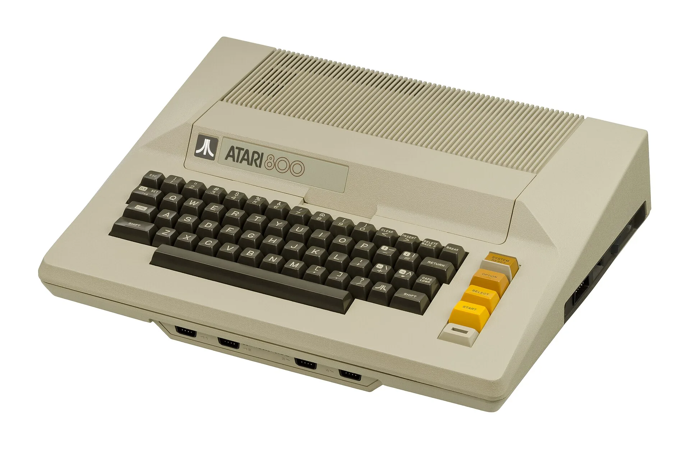

Notlar
Öğrenme, teknoloji ve hayatın içindeki fizik.
Kısa yazılar; okul sevgisinden ilk bilgisayara, motosikletten yelkene ve koçlukla değişen bakışa uzanıyor.
Okul Sevgim
Öğrencilik yıllarımın çoğunda okul benim için en keyifli ortamdı. Matematik ve fizik derslerinde dünyadan kopar, kendimden geçerdim. Okul asmak bir yana, hafta sonunun çabuk bitmesini istediğim zamanlar olurdu.
Benim için okul, kuralların ezberlendiği bir yer değildi. Matematik ve fizik yoluyla evrenin dilini anlamaya çalıştığım bir oyun alanıydı.
Zamanla şunu fark ettim: Öğrenmek yalnızca okul çağında yapılan bir şey değil. İnsan merakını canlı tutabildiğinde, hayatın her dönemi yeniden okul gibi olabiliyor.
İlk Bilgisayarım
Yazılımla ilk kez Amstrad CPC 464 sayesinde tanıştım. O zamanlar bir bilgisayarı kullanmak bugünkü kadar kolay değildi. Bir şey yapmak için önce nasıl yapılacağını anlamak, komutları denemek ve hatanın nedenini araştırmak gerekiyordu.
Sonra harçlıklarımı biriktirerek Sinclair ZX Spectrum aldım. O yaz dünyam bir süre uyku, kısa yemek molaları ve bilgisayardan ibaretti.
Basic, Pascal, C, Python... Diller değişti. Ama o ilk merak aynı kaldı: Aklımdaki bir fikri, çalışan bir şeye dönüştürmek.

Motosikletin Öğrettikleri
Motosiklet hayatıma bir arkadaşımın “Sen de al” demesiyle girdi. Zamanla eğitimler, uzun yollar, seyahatler, dernekler ve yeni arkadaşlıklarla bambaşka bir dünyaya dönüştü.
Fizik bilgim sürüşte birçok şeyi daha kolay anlamamı sağladı: güçlü frenlemede ağırlığın neden öne aktığını, virajda bakışın neden belirleyici olduğunu, gidonu neden dönüş yönünün tersine kısa bir an için ittiğimizi...
Motosiklet, şartları zorlamakla şartları okumak arasındaki farkı öğretti. Bazen hızlanmak değil, yavaşlamak gerekir. Bazen devam etmek değil, durmak gerekir.
Yelken ve Sınırlar
Yelkenle ilk kez bir arkadaşımın davetiyle tanıştım. İlk andan itibaren beni etkileyen şey, fizik kurallarının doğanın içinde bu kadar görünür olmasıydı.
Rüzgarı değiştiremezsiniz. Dalgayı durduramazsınız. Teknenin sınırlarını görmezden gelemezsiniz. Yapabileceğiniz şey, koşulları doğru okuyup doğru anda doğru ayarı yapmaktır.
Hayatta da çoğu zaman mesele gücü zorlamak değil, gücü doğru yönde kullanmaktır.
Koçlukla Değişen Bakışım
Uzun yıllar boyunca hayatı daha çok sistemler, sonuçlar ve çözümler üzerinden düşündüm. Bir problem varsa analiz edilir, nedenleri bulunur ve çözülür diye bakıyordum.
Koçluk eğitimleri bu yaklaşımın eksik tarafını görmemi sağladı. İnsanların yalnızca bilgi eksikliği nedeniyle zorlanmadığını fark ettim.
İyi teknoloji yalnızca teknik olarak doğru olan değildir. İnsanların gerçek hayatında anlaşılabilen, güven veren ve kullanımı sürdürülebilen teknolojidir.